Origami Camel Instructions You Can Fold Easily

Step 1
: Start with a square piece of origami paper. Fold the paper in half by taking the top corner and folding it to the bottom corner. The crease should run from the left corner tip to the right like in this picture. Use your nails to make a sharp crease.
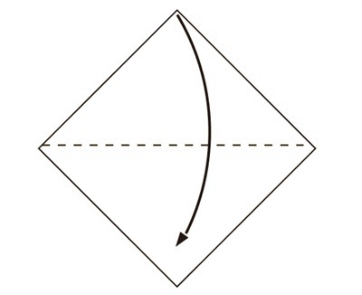
Step 2
: Fold the triangle in half by taking the right corner and folding it to the left.

Step 3
: Take the top flap and open it, creasing the left and right sides so you can fold the the top/right corner to the bottom corner.
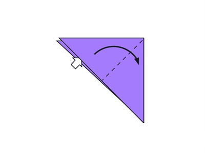
Step 4
: Now we’ll turn the paper over and do the same thing to the other side.
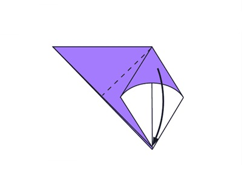
Step 5
: Turn over.
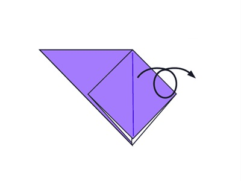
Step 6
: To do that, lift the right flap up so it stands vertically.Grab the left and right side of the flap and open it up. Crease the sides so you can fold the top corner down to the bottom.
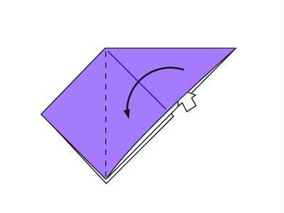
Step 7
: Fold and Unfold the sides and the top along the dotted lines. This step is preparation for the next step.
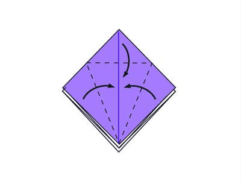
Step 8
: Open the flap upwards.

Step 9
: Fold the left and right sides inward.
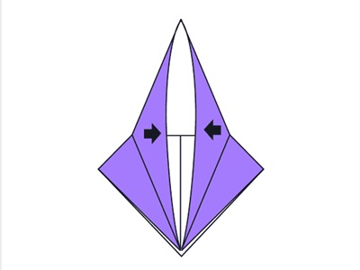
Step 10
: Turn the paper over.
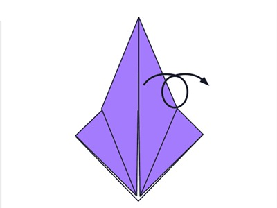
Step 11
: Repeat steps 7-9 on this side.
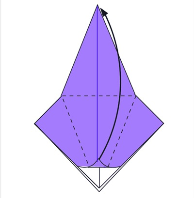
Step 12
: Fold the both sides of the upper layer and fold the lower parts into the cneter along the dotted line.Do the same thing on the other side.
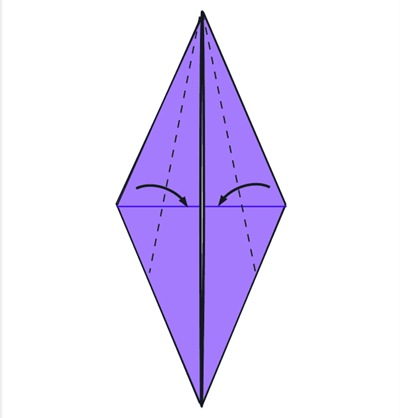
Step 13
: Inside Reverse Fold up both sides of the paper.
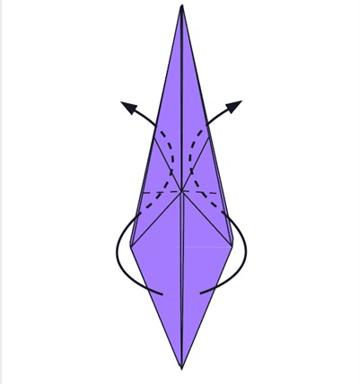
Step 14
: Make a inside reverse fold on the back part to make camel’s back legs.
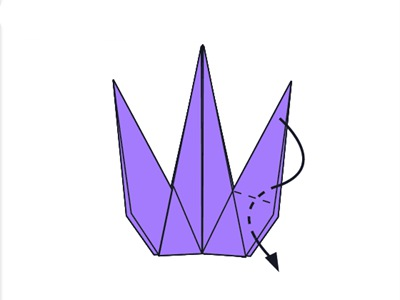
Step 15
: Fold the top flap down and repeat on the other side.
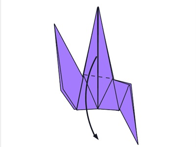
Step 16
: Make a inside reverse fold on the left-top tip down to make the head.

Step 17
: Make a inside reverse on the tip of the head.
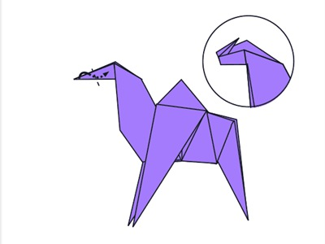
Step 18
: Fold the back of the leg inside along the dotted line and repeat on the other side.
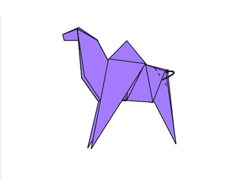
Step 19
: Draw eyes and finished.

Now you know how to make a paper camel! Easy wasn’t it?Like this project if you like this origami!